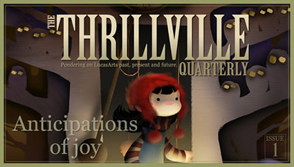
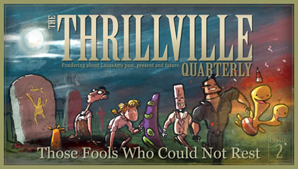

Archive
All our issues and special editions can be found here.
2009

Anticipations of Joy
LucasArts renews our hopes by showing some love to their classics. We take a good look at Lucidity, an original new game, developed in-house. Meanwhile, Gabriel Schenk observes the Celtic influences in The Curse of Monkey Island.
2012

Those Fools Who Could Not Rest
Change of presidents, seeming change in priorities. Jan Jacob Mekes writes a compelling short story about two legendary videogame creators who seek to revive the adventure game genre. From our vault of unpublished material, we undust an epic interview with Dave Grossman. Daniel Wishart talks about the Double Fine Adventure and how things have changed, and Gabriel Schenk shows some appreciation for the unknown. We feature our first original cover, crafted by Jón Kristinsson.